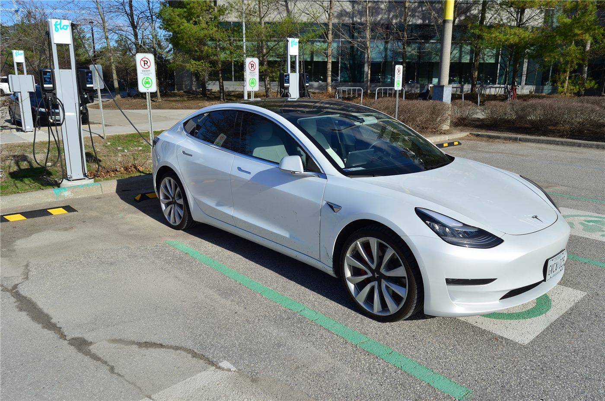
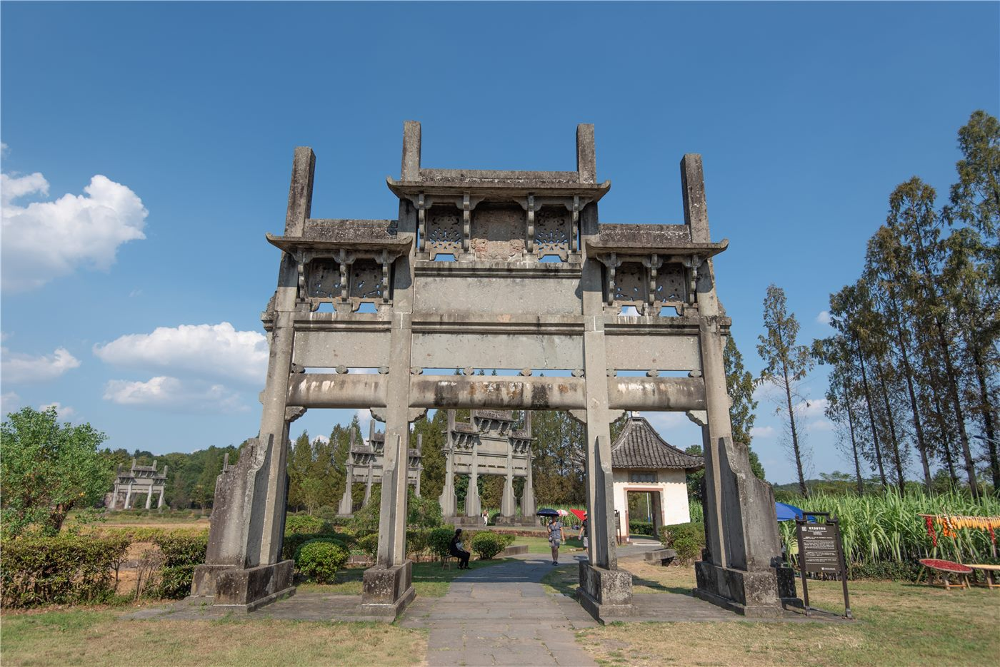

橋중국
중국중국, EU에 '자유무역·대화' 강조… 통상 협력 의지
중국 외교부, EU와의 경제·통상 관계는 상호이익이라며 보호무역 자제 촉구.
중국 외교부, EU와의 경제·통상 관계는 상호이익이라며 보호무역 자제 촉구.

왕이 외교부장, 글로벌 거버넌스 개혁 방향 제시. 중국, 7월 세계 AI 회의 개최 예정.

상무부 집계, 서비스 교역 확대 지속. 디지털·관광·운송이 견인.

수출 증가폭이 둔화되며 흑자가 축소됐다. 대외 수요 약화 신호로 읽힌다.

중국 외교부가 한국 측이 '대만은 중국의 일부'라는 입장에 변함이 없음을 재확인했다고 밝혔다. 한·중 수교 공동성명의 정신을 양측이 점검한 모양새다.

중국 외교부가 왕이 정치국원이 22~23일 인도에서 열리는 BRICS 안보 고위대표 회의에 참석한다고 밝혔다. 9월 정상회의를 위한 정치적 준비 성격이다.

중국 상무부가 중국과 유럽연합(EU)의 경제·무역 협상이 원활히 진행되고 있다며 장관급 협의를 계획하고 있다고 밝혔다. 양측 교역 관계의 관리 의지가 확인됐다.

중국이 5개 부처 합동으로 신에너지차의 농촌 보급 활동을 펼친다. 농촌 소비자가 신에너지차로 바꾸면 자격 수량 제한 없이 교체 보조금을 신청할 수 있다.

중국 증권감독관리위원회가 과창판(科創板) 개혁 방안을 내놨다. 인공지능 등 '하드테크' 기업의 상장 지원을 확대하는 것이 핵심이다.

중국이 리비아의 포용적 정치 과정을 함께 추진하자고 촉구했다. 분쟁을 겪어 온 리비아의 안정에 국제사회가 힘을 모아야 한다는 입장이다.
마카오가 'APEC 시각(時刻)'을 맞아 문화 공생과 기회 공유를 내세우고 있다. 다문화 도시의 강점을 살려 지역 협력의 가교 역할을 모색한다.

베이징이 단오절 연휴를 맞아 예술체조 대회를 연다. 중국 대표팀이 홈에서 관중 앞에 나서면서 스포츠 축제 분위기가 무르익는다.

중국이 전통 문화의 뿌리를 잇는 무형문화유산의 계승을 조명하고 있다. 옛 기예를 현대에 되살리는 노력이 문화 정책의 한 흐름으로 자리 잡았다.

중국이 오랜 기간 꾸준한 생태 녹화로 척박한 변방을 '녹주(綠洲)'로 바꿔 온 사례를 조명했다. 사막화 방지와 식생 복원의 누적된 성과다.